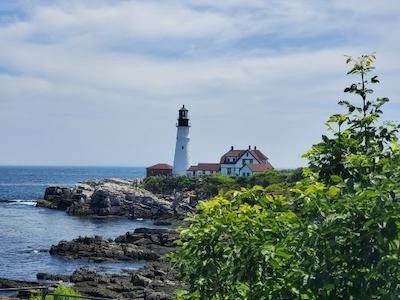

Alisa Campbell
About Me
My name is Alisa. I was born in Cedar City Utah, the same city my Father was born in, but at that time it was known as "Hamilton Fort". I currently work as a Sterile Processing Technician and am a traveler. I've worked in St. Louis, Missouri, Cincinnati, Ohio, and am currently working in Portland, Maine. I love my home and am married to my wonderful husband Michael Campbell.
Portland, Main U.S.A.

Maine is known as "Vacationland" and its population swells every summer as people travel to Maine. It is a great spot for anyone wishing to enjoy a hike, swim in a cold ocean or view the wildlife in its marshlands. It has a short summer compared to down south and the locals will be out and about rain or shine. It is truly a very beautiful state.